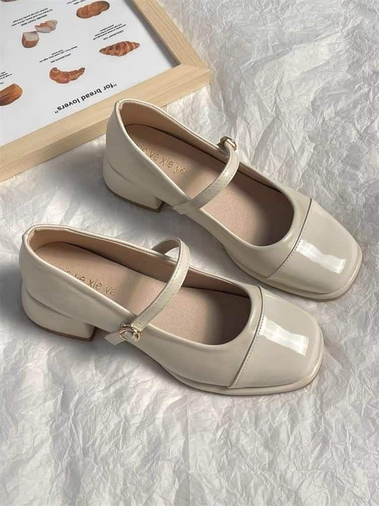
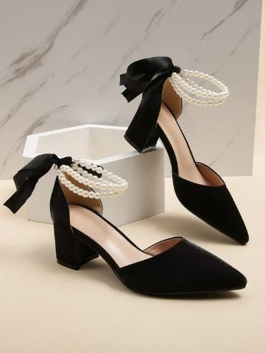
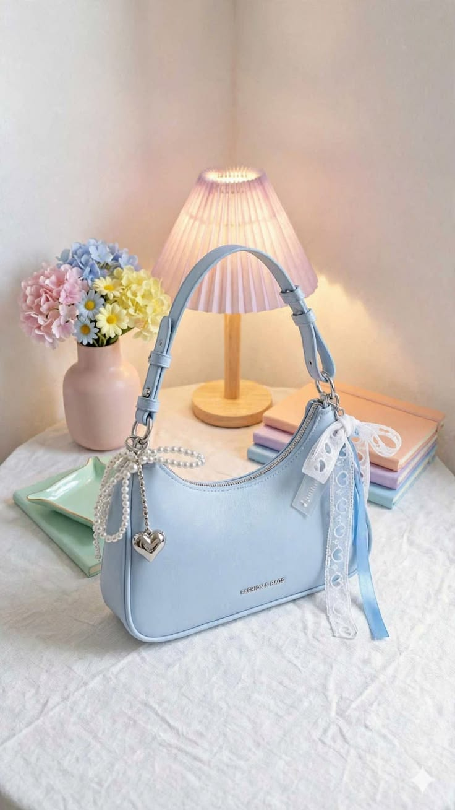
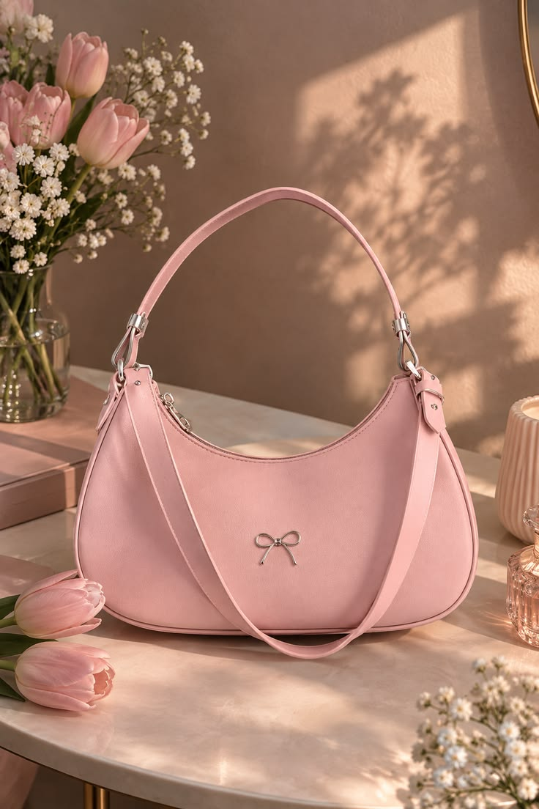
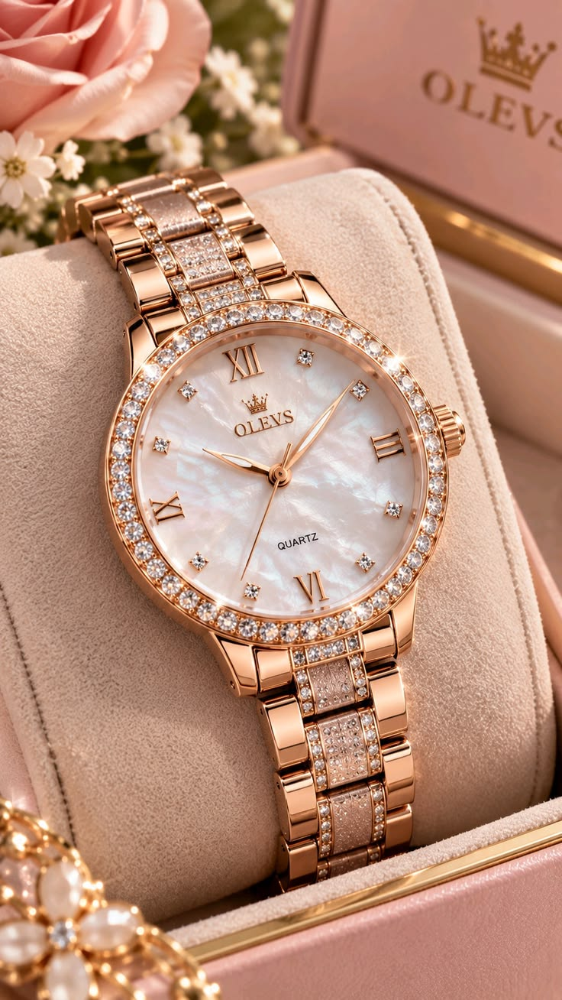
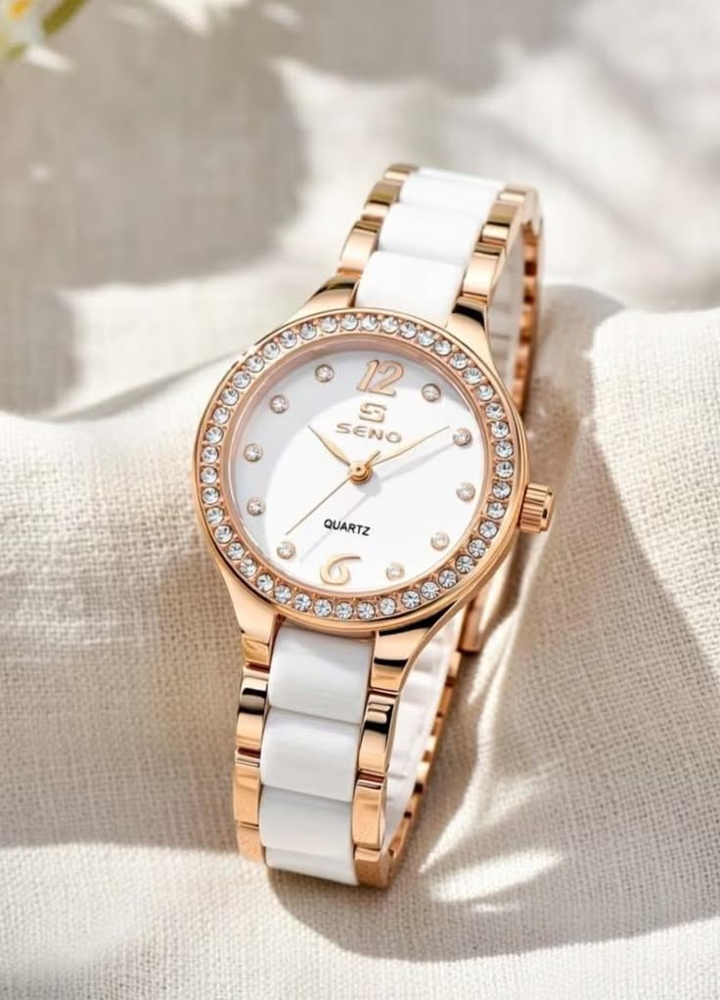

รายละเอียดคอลเลกชันรองเท้า กระเป๋า และนาฬิกา

SHOES / ITEM 01
Cream
Mary Jane
ดีไซน์เรียบง่าย สีครีมที่จับคู่กับเสื้อผ้าได้หลายลุค
- ประเภท
- รองเท้าแมรี่เจน
- สี
- ครีม
- จุดเด่น
- สายคาดและรูปทรงเรียบง่าย
WHY I LOVE IT
ฉันชอบรองเท้าคู่นี้เพราะสีครีมเข้ากับเสื้อผ้าได้ง่าย ทั้งกางเกงและกระโปรง รายละเอียดสายคาด ทำให้รองเท้าดูมีเอกลักษณ์ เหมาะกับวันที่อยากแต่งตัวเรียบง่ายแต่ยังดูใส่ใจรายละเอียด

SHOES / ITEM 02
Black
Platform
รูปทรงโดดเด่น เพิ่มความสนุกให้การแต่งตัว
- ประเภท
- รองเท้าแพลตฟอร์ม
- สี
- ดำ
- จุดเด่น
- พื้นหนาและสายคาดที่โดดเด่น
WHY I LOVE IT
ฉันชอบรองเท้าคู่นี้เพราะรูปทรงพื้นหนาที่ดูมีเอกลักษณ์ สีดำจับคู่กับเสื้อผ้าได้ง่าย และช่วยให้ลุคเรียบ ๆ ดูน่าสนใจขึ้น เป็นคู่ที่เลือกเมื่ออยากเพิ่มความโดดเด่นให้การแต่งตัว

BAGS / ITEM 03
Blue
Ribbon Bag
สีฟ้าอ่อนและรายละเอียดโบว์ที่ทำให้ใบนี้น่าจดจำ
- ประเภท
- กระเป๋าถือ
- สี
- ฟ้าอ่อน
- จุดเด่น
- โบว์ตกแต่งและรูปทรงกระเป๋าที่เป็นสัดส่วน
WHY I LOVE IT
ฉันชอบกระเป๋าใบนี้เพราะสีฟ้าอ่อนที่ดูสดใส รายละเอียดโบว์ช่วยเพิ่มความน่ารักให้กับรูปทรงเรียบ ๆ เมื่อจับคู่กับเสื้อผ้าโทนขาวหรือครีม กระเป๋าจะเป็นจุดเด่นที่ทำให้ลุคดูมีสีสันมากขึ้น

BAGS / ITEM 04
Everyday
Pink Bag
กระเป๋าโทนสีอ่อนที่เติมความสดใสให้วันธรรมดา
- ประเภท
- กระเป๋าสะพายไหล่
- สี
- ชมพูอ่อน
- จุดเด่น
- โทนสีพาสเทลและรูปทรงที่เข้ากับลุคประจำวัน
WHY I LOVE IT
ฉันชอบกระเป๋าใบนี้เพราะสีชมพูอ่อนที่ให้ความรู้สึกนุ่มนวล สามารถนำไปจับคู่กับเสื้อยืด กางเกงยีนส์ หรือชุดโทนพาสเทลได้ เป็นกระเป๋าที่ช่วยเติมความสนุกให้การแต่งตัวในวันสบาย ๆ

WATCHES / ITEM 05
Rose Gold
Watch
โทนโรสโกลด์และหน้าปัดที่เพิ่มความหรูให้ทุกลุค
- ประเภท
- นาฬิกาข้อมือ
- สี
- โรสโกลด์
- จุดเด่น
- โทนโลหะอบอุ่นและรายละเอียดหน้าปัด
WHY I LOVE IT
ฉันชอบนาฬิกาเรือนนี้เพราะสีโรสโกลด์ที่ดูอบอุ่น เป็นเครื่องประดับที่ช่วยให้การแต่งตัวดูเรียบร้อยขึ้น สามารถใส่คู่กับเสื้อผ้าเรียบ ๆ เพื่อให้รายละเอียดของนาฬิกาดูโดดเด่น

WATCHES / ITEM 06
White & Gold
Watch
สีขาวตัดกับสีทอง ดูเรียบง่ายและมีรายละเอียด
- ประเภท
- นาฬิกาข้อมือ
- สี
- ขาวและทอง
- จุดเด่น
- การตัดกันของสีขาวกับรายละเอียดสีทอง
WHY I LOVE IT
ฉันชอบนาฬิกาเรือนนี้เพราะการจับคู่สีขาวกับสีทอง ที่ดูสะอาดตาและมีความหรูในตัว เหมาะกับเสื้อผ้าโทนสว่าง และเป็นรายละเอียดเล็ก ๆ ที่ช่วยให้ลุคดูสมบูรณ์ขึ้น